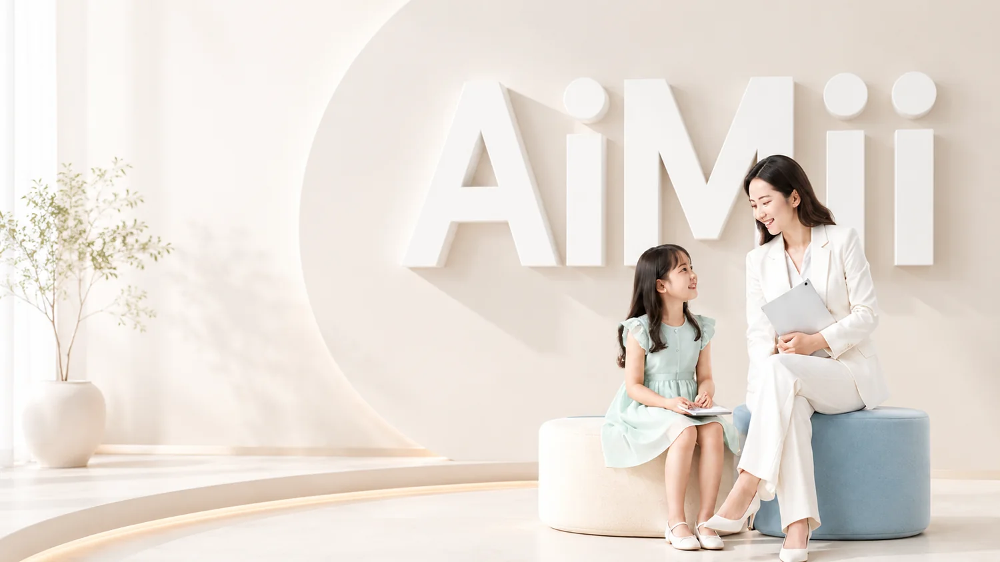
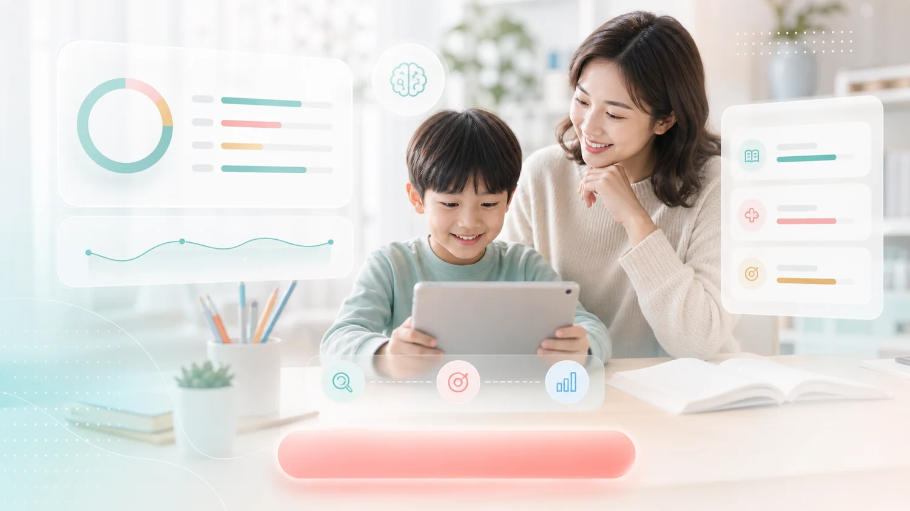

伴伴方法論
以孩子為中心
先理解孩子的程度與節奏，再決定學習路徑。
EduBaania 結合 AI 學習診斷、專業學習教練與可視化數據，為每位孩子打造專屬的學習路徑，讓學習更有效、陪伴更安心。

透過 AI 解析學習歷程，精準找出孩子的盲點與瓶頸。
將目標、內容、練習與回饋串成孩子可持續的學習流程。
AI 提供科學判讀，教練給予策略引導與有溫度的支持。
數據可視化讓進步清晰可見，建立自信，也讓家長放心。
看見卡點，陪出自學力。
孩子學不好，很多時候不是因為不努力，而是沒有人真正看見他卡在哪裡。家長焦慮，也不是因為不愛孩子，而是缺少一套能信任的方法。
伴伴辦學因此誕生。
我們用 AI 找出孩子的學習盲點，用實體空間建立穩定的學習節奏，用真人教練陪孩子面對困難，也用清楚的報告讓家長看見孩子每一步的進步。
我們不只是教孩子答對題目，而是陪孩子建立面對學習的能力。
因為真正重要的，不只是這一次考得更好，而是孩子開始相信：我知道自己哪裡不會，我知道下一步怎麼做，我也可以慢慢變好。
我們相信，好的學習支持不只是題目與答案，而是有人理解孩子的卡點、情緒與節奏。
20 年教學與課程研發經驗，擅長把複雜觀念轉成孩子聽得懂的路線。
陪伴孩子建立每日節奏，引導自律與完成感。
AI 數據分析專家，協助教練把洞察轉成具體行動。
協助家長理解孩子學習狀態，打造安心的成長回饋。
陪伴孩子設定目標、建立習慣，引導他肯定進步與自己的學習節奏。
了解更多理解家長與孩子的需求，提供最適合的學習方案與支持。
了解更多用設計與技術優化學習體驗，打造更好用、更有感的產品。
了解更多
讓每個孩子都能被理解、被支持、被看見，並持續成長。EduBaania